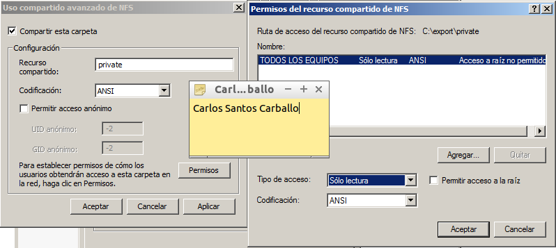

- Módulo: Sistemas Operativos
- Título del trabajo NFS
- Componentes del grupo: Carlos Santos Carballo
- Curso Académico: 2014/2015
- Fecha de entrega: 9 de Marzo de 2015
Para desarrollar esta práctica necesitaremos dos máquinas, una Windows 2008 Server Enterprise que hará de servidor y un Windows 7 Enterprise que hará de cliente. Configuraremos las interfaces de red de ambas máquinas.

A continuación establecemos el nombre de equipo y grupo de trabajo de ambas máquinas.

Ahora procedemos a instalar el servicio NFS en Windows 2008 Server. Para ello agregamos el rol "Servidor de Archivos" y posteriormente marcamos "Servicio para NFS".
Configuramos el servidor NFS de la siguiente forma:
Creamos la carpeta c:\export\public. Accedemos a propiedades / Compartir NFS, y la configuramos para que sea accesible desde la red en modo lectura/escritura con NFS.
Creamos la carpeta c:\export\private. Accedemos a propiedades / Compartir NFS, y la configuramos para que sea accesible desde la red sólo en modo sólo lectura.


A continuación iremos al cliente e instalamos el soporte cliente NFS bajo Windows. En primer lugar vamos a instalar el componente cliente NFS para Windows, para ello vamos a Panel de Control / Programas / Activar o desactivar características de Windows.
Nos desplazamos por el menú hasta localizar Servicios para NFS y dentro de este, Cliente NFS. Marcamos ambos y le damos a Aceptar.
Para iniciar el servicio NFS en el cliente, abrimos una consola con permisos de Administrador, y ejecutamos el siguiente comando: nfsadmin client start
Ahora necesitamos montar el recurso remoto para poder trabajar con él. Para montar el recurso escribimos:
Para montar el recurso remoto: mount –o anon,nolock,r,casesensitive \\ip-del-servidor\Nombre-recurso-NFS *. Para comprobar: net use.
Estos pasos lo haremos para montar tanto la carpeta public como private.
Hecho esto nos deberia salir en la ventana Equipo los recursos montados y comprobamos que podemos acceder a ellos.
Realizaremos la misma práctica en linux, el servidor será un LUbuntu 14.04 y el cliente igual.
Configuraremos las ips en ambas máquinas.
Comprobamos que se comunican mediante un ping
A continuación instalamos en el servidor el NFS con este comando : apt-get install nfs-common nfs-kernel-server
Creamos las siguientes carpetas/permisos:
Vamos configurar el servidor NFS de la siguiente forma: La carpeta /var/export/public, será accesible desde toda la red en modo lectura/escritura. La carpeta /var/export/private, sea accesible sólo desde la IP del cliente, sólo en modo lectura. Para ello modificamos el fichero /etc/exports añadiendo las siguientes líneas:
/var/export/public *(rw,sync,subtree_check)
/var/export/private ip-del-cliente/32(ro,sync,subtree_check)
Guardamos y reiniciamos el servicio, a continuación comprobamos su estado.
Con el comando "showmount -e localhost" mostramos la lista de recursos exportados por el servidor nfs.
Pasamos al cliente y lo primero que debemos hacer es descargar el cliente NFS. Introducimos el comando "apt-get install nfs-common."
Ejecutamos el comando "nmap ip-del-servidor". Nmap sirve para escanear equipos remotos, y averiguar que servicios están ofreciendo al exterior
A continuación ejecutamos los siguientes comandos para montar los recursos en el cliente
mkdir /mnt/remoto/public
mount ip-del-servidor:/var/export/public /mnt/remoto/public
mkdir /mnt/remoto/private
mount ip-del-servidor:/var/export/private /mnt/remoto/private

Una vez hecho esto, podremos ejecutar el comando "df -hT" para comprobar si se han montado correctamente.

Probamos a crear un fichero en el cliente y debería aparecer en el servidor.


Para finalizar si queremos montar automaticamente cada vez que iniciemosel ordenador, debemos modificar el fichero " /etc/fstab."
Reiniciamos y comprobamos.